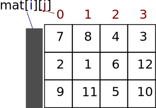

Universidade Atlântica
Vetores e Matrizes em Python
Aula 05
Linguagem de Programação
Universidade Atlântica
Aula 05
Fernanda Passos
Linguagem de Programação
vet1 = [1, 2, 3, 6]vet2 = [1.0, 3.1, 7.6, 8.9, 9.0]vet3 = [True, False, True]vet4 = ['A', 'casa', 'é', 'pequena']vet1 = [1, 2, 3, 6]
vet2 = [1.0, 3.1, 7.6, 8.9, 9.0]
vet3 = [True, False, True]
vet4 = ['A', 'casa', 'é', 'pequena']soma = 0
for i in range(10):
n = int(input("Entre com a nota " + str(i) + ": "))
soma = soma + n
media = soma/10
# contar quantos alunos estão acima da média.
[False, True, [0, 1]]lista1 está dentro da lista2.
[[1, 3], -1, [3, 2, 6]]print da matriz:[[7, 8, 4, 3], [2, 1, 6, 12], [9, 11, 5, 10]]None representa um elemento nulo.
print(M[1][2])print(M[2][3])M[0][0] = 20M[2][1] = M[2][1] + 1M[0][3] = M[0][3] * 3M[0][2] = M[0][0] + M[0][1]len(M)len(M[0])
mat = [[7, 8, 4, 3], [2, 1, 6, 12], [9, 11, 5, 10]]
soma = 0
# Devemos variar a coluna.
for j in range(4): # poderia substituir 4 por len(mat[0])
soma = soma + mat[0][j]
print(soma)for dentro de outro!in no for.
[7, 8, 4, 3]
[2, 1, 6, 12]
[9, 11, 5, 10]mat = [[7, 8, 4, 3], [2, 1, 6, 12], [9, 11, 5, 10]]
for lin in mat:
for c in lin:
print(c, end=" ")
print()7 8 4 3
2 1 6 12
9 11 5 10format: sobre a string.format.format: formato.format(valor1, valor2, ...)
formato é uma string de formato.valor# são os valores a serem formatados.'{} {}'.format('casa', 'carro') : cada valor é associado a um {}.
casa⌷carro'{:10}'.format('casa') : alinhamento à esquerda com 10 caracteres.
casa⌷⌷⌷⌷⌷⌷'{:>10}'.format('casa') : alinhamento à direita com 10 caracteres.
⌷⌷⌷⌷⌷⌷casa'{:^10}'.format('casa') : centralização com 10 caracteres.
⌷⌷⌷casa⌷⌷⌷f"formato", valor1, valor2, ...
formato é uma constante string de formato.valor# são os valores a serem formatados.f"{'casa':10}" : alinhamento à esquerda com 10 caracteres.
casa⌷⌷⌷⌷⌷⌷f"{'casa':>10}" : alinhamento à direita com 10 caracteres.
⌷⌷⌷⌷⌷⌷casaf"{'casa':^10}" : centralização com 10 caracteres.
⌷⌷⌷casa⌷⌷⌷ljust(n): justifica a string à esquerda com \(n\) caracteres.rjust(n): justifica a string à direita com \(n\) caracteres.center(n): centraliza a string em \(n\) caracteres.'casa'.ljust(10) : alinhamento à esquerda com 10 caracteres.
casa⌷⌷⌷⌷⌷⌷'casa'.rjust(10) : alinhamento à direita com 10 caracteres.
⌷⌷⌷⌷⌷⌷casa'casa'.center(10) : centralização com 10 caracteres.
⌷⌷⌷casa⌷⌷⌷format para imprimir matrizes:mat = [[7, 8, 4, 3], [2, 1, 6, 12], [9, 11, 5, 10]]
for lin in mat:
for c in lin:
print('{:>3}'.format(c), end=" ")
print() 7 8 4 3
2 1 6 12
9 11 5 10